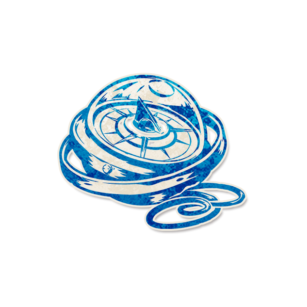

领航员

角色配置
- 角色类型：镇民
每个夜晚*，以钟为罗盘，上个处决指针为南，你得知某个方位有邪恶。如果该玩家为邪恶，指针视为北。
以上配置来自最终 JSON 合集；以下保留原文档说明（如有）。
角色作者
黑星
背景故事
“迷乎云梦者，必指往南方，不识西东与之共夜航。”从古代牵星引路，到大航海时代晚期制霸海疆，罗盘和六分仪指引着齿轮与轰鸣的蒸汽机的航向，也引领着那个辉煌荣耀的时代的方向。
角色能力
每个夜晚*，以钟为罗盘，上个处决指针为南，你得知某个方位有邪恶。如果该玩家为邪恶，指针视为北。
角色简介
领航员能得到的信息方位共有八个，东、南、西、北、东南、东北、西南、西北
请注意！座位的参差不齐并不影响能力，因为罗盘的盘面是“钟面”，所有玩家的座位会被归一化，使得它们在魔典的钟面上均匀分布。
若白天没有造成处决，当晚领航员无法获得信息。
【12人局】每个方向会指向1~3名玩家。
【8人局】每个方位各指定1名玩家。
范例
12人血染钟楼对局中，7号小黑是领航员。第一天白天，无人被处决，当晚小黑没有拿到任何信息。第二个白天，4号小织（善良的镇民）被处决。当晚，说书人将4号位置设为南方，他选择告知的邪恶玩家是2号小圆。因此，小黑收到信息："东南方向有邪恶"。
8人血染钟楼对局中，2号小樱是领航员。第一天白天，5号玩家（邪恶的爪牙）被处决。当晚，说书人将5号位置设为北方（而非南方），其余玩家仍按顺时针均匀分布。由于指针基准从南方翻转为北方，整个罗盘的方位对应关系旋转了180度。然后，说书人告知小樱"东北方向有邪恶"。小樱惊讶地发现，如果5号为南方，指向的玩家只有自己。因此，她开始怀疑被处决的5号玩家是邪恶的，那么5号的指针为北，东北方向实际指向的是6号玩家。
运作方式
在游戏开始前，说书人将所有玩家的座位标记均匀放置于魔典上，形成“钟面”。
每个白天，检查是否有玩家被处决，若无，今晚不要唤醒领航员。若有，则根据处决玩家的阵营，分别在该玩家旁边放置”指针（南）“或”指针（北）“标记。
入夜，如果领航员旁边有标记，则当晚要唤醒领航员，反之则不唤醒。选择一名邪恶玩家，根据指针计算该玩家的方位，告知领航员这个方位。
提示标记
南、北
●领航员需要玩家了解东西南北分别是什么方向的生活常识。
●领航员的错误信息格式是，得知某个没有邪恶玩家的方向。
●若角色能力改变了玩家在魔典上的座位顺序，领航员的钟面分布需按新顺序重新计算。仅改变相邻判定而不改变座位顺序的效果（如裂缝）不影响方位判定
●根据玩家入座的情况，可能存在某个方位有多位玩家的情况，这是正常现象。
角色信息
●英文名：
●角色类型：镇民
●角色能力类型：持续信息